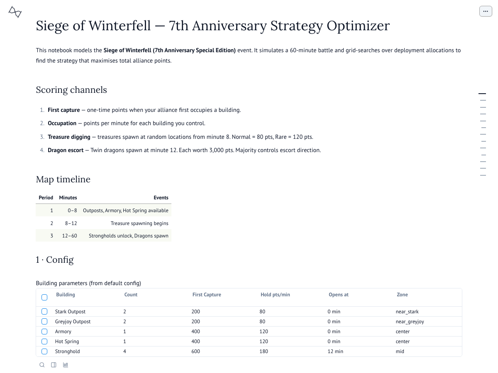
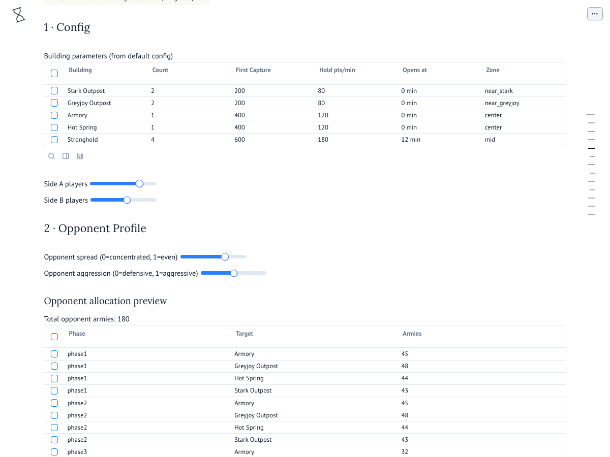
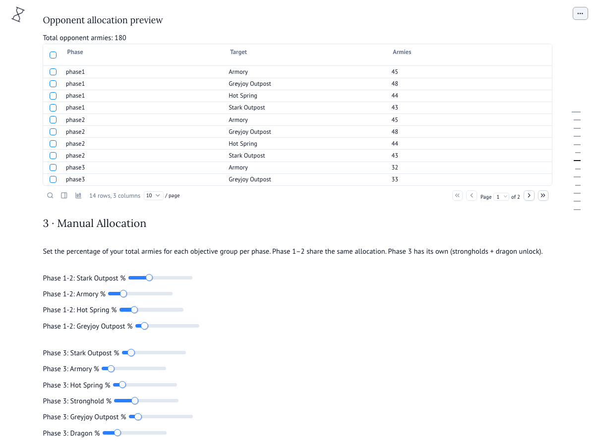

Siege of Winterfell — 7th Anniversary
Strategy Optimizer — User Guide
This interactive notebook helps your alliance plan army deployments for the
Siege of Winterfell (7th Anniversary Special Edition) event.
It simulates a full 60-minute battle and finds the allocation that maximises
your total score against a configurable opponent.
Open the Optimizer
How the event works
The battle lasts 60 minutes across three phases. Your alliance earns points from four channels:
| Channel | How it works |
|---|
| First capture | One-time bonus when you first occupy a building |
| Occupation | Points every minute for each building you hold |
| Treasure | Dig treasures at random spots from minute 8 (80–120 pts each) |
| Dragon escort | Two dragons spawn at minute 12, worth 3,000 pts each. Majority wins the escort. |
| Phase | Minutes | What opens |
|---|
| 1 | 0–8 | Outposts, Armory, Hot Spring |
| 2 | 8–12 | Treasure spawning begins |
| 3 | 12–60 | Strongholds unlock, Dragons spawn |
Section 1 — Config

This section is read-only reference. It shows every building on the map with its point values.
Below the table, two sliders set the match size:
- Side A players — your alliance size (each player contributes 3 army units)
- Side B players — the opposing alliance size
Example: 80 players on Side A = 240 total armies to distribute.
A smaller Side B (e.g. 60) gives you more armies per objective, making wins easier.
Section 2 — Opponent Profile

These two sliders control how the simulated opponent behaves:
- Spread (0–1) — How evenly the opponent distributes armies.
0 = all-in on one target, 1 = spread evenly across everything.
- Aggression (0–1) — How much the opponent pushes into your territory.
0 = purely defensive (ignores your outposts), 1 = maximum pressure on your side.
The Opponent allocation preview table below the sliders updates live,
showing exactly how many armies the opponent sends to each building in each phase.
Use this to verify the profile matches the opponent you expect to face.
Start with spread 0.7, aggression 0.5 for a balanced opponent.
If you're facing a zerg-rush alliance, try aggression 0.8+.
Against turtles, drop it to 0.2.
Section 3 — Manual Allocation

This is where you design your own strategy. Each slider sets the percentage
of your total armies sent to that objective.
Phase 1–2 sliders (minutes 0–12)
- Stark Outpost % — your home outposts (easy to hold, steady income)
- Armory % — centre building (120 pts/min + 50% stat buff)
- Hot Spring % — centre building (120 pts/min + 100% heal speed)
- Greyjoy Outpost % — enemy outposts (risky but denies them points)
Phase 3 sliders (minutes 12–60)
Same buildings plus two new targets that unlock at minute 12:
- Stronghold % — 4 strongholds worth 180 pts/min each; the biggest point source in the late game
- Dragon % — armies contesting the dragon escort (6,000 pts total if you win majority)
The result table below shows your Total Score vs the opponent, broken down by
first capture, hold, dragon, and treasure. The Margin row tells you
how far ahead (or behind) you are.
Percentages don't have to sum to 100 — unused armies simply stay in reserve.
But going over 100% is not allowed.
Section 4 — Optimizer
Instead of manually tweaking sliders, the optimizer tries every combination
and ranks them by score. It uses the player counts and opponent profile you set above.
- Grid step % — controls granularity.
25% is fast (~seconds);
10% is thorough but slower. Start coarse, then refine.
The Top 10 Allocations table shows the best strategies found.
Each row lists the exact army count per objective per phase.
Use the #1 result as your starting plan, then fine-tune in Section 3.
Sections 5–6 — Sweeps
These run the optimizer across multiple scenarios automatically:
- Player Ratio Sweep — shows the best strategy for different alliance sizes
(30v70, 40v60, etc.), so you can plan for various matchups.
- Opponent Sensitivity — sweeps all spread/aggression combos to show how
robust your strategy is. If your margin stays positive across the whole grid,
your plan is solid regardless of what the opponent does.
Section 7 — Strategic Insights
A summary of key takeaways derived from the model:
- Dragon escort is high-value — 6,000 pts from minute 12. Always contest if you have the numbers.
- Strongholds dominate late-game — 720 pts/min combined, plus the largest first-capture bonus (2,400).
- Outposts are early-game anchors — cheap to hold, steady 80 pts/min from the start.
- Centre buildings give buffs — Armory (50% stats) and Hot Spring (100% heal) matter beyond raw points.
- Numbers compound — even a small player advantage lets you contest more objectives at once.
Quick workflow
- Set your alliance sizes in Section 1
- Profile the opponent in Section 2
- Run the Optimizer (Section 4) at 25% step
- Copy the top result into Manual Allocation (Section 3) and tweak
- Check the Sweeps (Sections 5–6) to stress-test your plan
Open the Optimizer